Capítulo 14
«Las Meninas», el mundo del mago Velázquez
Hay un libro muy interesante: los «Diarios de Salvador Dalí». Al final de ese libro hay una tabla que fue confeccionada por una máquina japonesa1 extraña y, al parecer, muy inteligente. La máquina puntuaba a una enorme cantidad de pintores universales. Allí estaban todos los nombres que conocemos bien. Pero la mayor cantidad de puntos, en todos los indicadores, esta máquina se la dio a seis pintores: Tiziano, Rafael, Vermeer de Delft, Rembrandt, Cézanne y Velázquez. De ellos, el primer lugar se lo otorgó esa máquina a Rafael, y el segundo a Velázquez.
Velázquez es uno de los pintores más geniales; aquí se puede estar de acuerdo con la máquina japonesa, no hay nada que objetar.
Diego Rodríguez de Silva y Velázquez nació en 1590 en Sevilla2. Velázquez fue contemporáneo de Cervantes y de Shakespeare. Puede uno imaginarse qué tiempo tan denso y tan genial era aquel, si al mismo tiempo viven y trabajan tres hombres tan extraordinarios como el pintor Velázquez, el escritor Cervantes y el dramaturgo Shakespeare. Y Velázquez, y Shakespeare, y Cervantes representan las cumbres de la actividad del espíritu humano, del genio humano.
Y Velázquez y Cervantes fueron profundamente españoles. Pertenecían a la escuela nacional española. Pero en esencia ya entonces eran más que la escuela española. También hoy son más que la escuela española. Pertenecen por completo a la cultura universal. Y en cada cultura son inteligibles, porque todo cuanto escriben o dicen atañe a cada uno de nosotros.
Es posible que ni a Velázquez, ni a Cervantes, ni a Shakespeare, en el pleno sentido de la palabra, se los pueda llamar pintor, escritor y dramaturgo: son, con todo, un poco más de lo que los definimos. Velázquez es más de lo que puede dar la pintura, Shakespeare es más de lo que puede dar la dramaturgia, y Cervantes, sin duda, es más de lo que puede dar la gran novela. Y no por casualidad Fiódor Mijáilovich Dostoievski dijo una frase muy extraña: que en el Juicio Final la humanidad podrá rendir cuentas3 con la novela de Cervantes «Don Quijote».
En general, el fin del siglo XVI y el comienzo del XVII, cuando todos ellos vivieron, fue un tiempo completamente desesperado, lleno de tensión espiritual, tiempo de explosión de genialidad y de un fenómeno tan interesante como la piratería europea. Se podría describir interminablemente, pero lo más importante en él es esa electricidad que saturaba el aire de la cultura europea. Puede uno imaginarse de qué magma ardiente se tejieron los genios y los caracteres de estas personas.
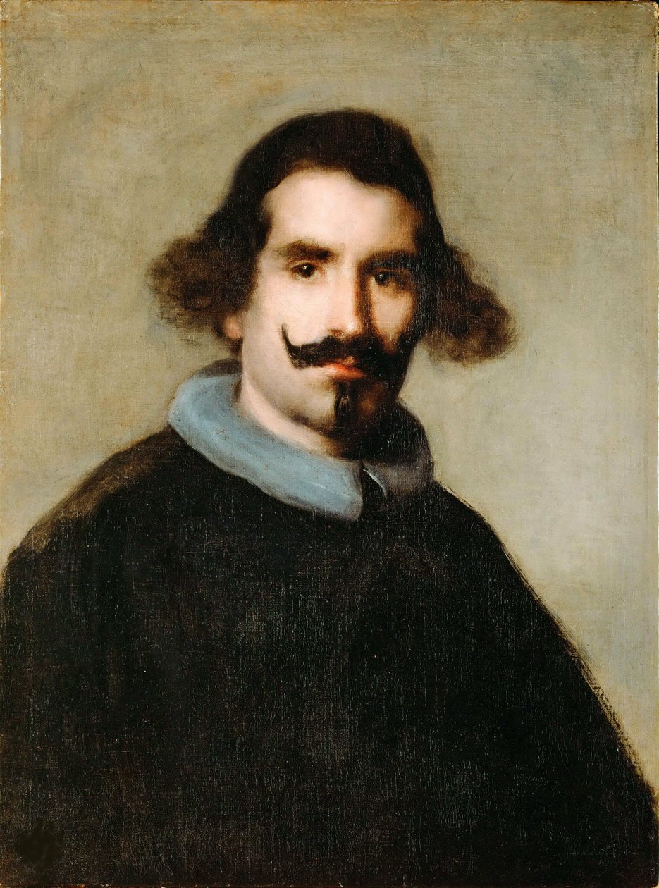
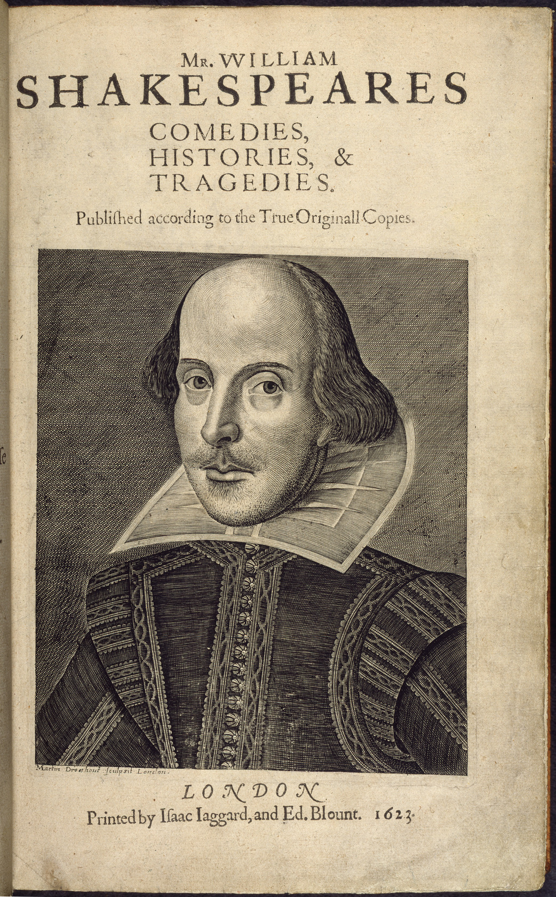
Es curioso también que estos tres nombres (entre paréntesis, podrían añadirse aquí Lope de Vega y muchísimas personas más) son especiales. Y son especiales por una razón misteriosísima: todos ellos son anónimos. Todos los conocen; son los nombres más célebres de la cultura de fines del siglo XVI y comienzos del XVII. Y, al mismo tiempo, nadie sabe nada de ellos. No todo es conocido de la vida de Cervantes. Hasta hoy Shakespeare se oculta bajo una máscara. Es la anonimia de los genios. El genio auténtico, como se sabe, es siempre anónimo. ¿Por qué sucede así? Su nombre está siempre rodeado de misterio. Su biografía nunca está aclarada, y puede que ni siquiera sea necesario conocer sus biografías, porque no conocemos la naturaleza de su talento, no conocemos la naturaleza de su genialidad.
El mundo que reflejó Velázquez lo conocemos bien; los historiadores del arte y los estudiosos han descrito a casi todos los héroes que representó: todos los enanos, todos los reyes, todos los parientes. Se conocen las biografías de todos, menos la del propio Velázquez. Y no hay un solo libro que dé siquiera alguna respuesta a la pregunta: ¿quién fue este hombre que ocupaba un cargo tan miserable en la corte de Felipe IV4 y que solicitaba del gobierno un comprobante del impuesto de la sal para que su familia recibiera una pensión y él pudiera llamarse hidalgo en España? Y, sin embargo, precisamente a Velázquez podemos llamarlo el primer pincel de España y una de las primeras figuras de la pintura universal.
Todas sus biografías se reducen a unos hechos sencillos que enumeran acontecimientos insignificantes de su vida: qué cargo cortesano tuvo, con quién estuvo casado, cuándo se trasladó de Sevilla a Madrid, en qué circunstancias murió, qué relaciones tuvo con el rey Felipe IV. Pero algunas puertas permanecen siempre cerradas ante nosotros, por eso lo mejor es leer lo que estas personas escribieron o mirar sus cuadros. Quizá solo en ese caso nos aproximemos un poco a lo que llamamos la más grande o genial obra creadora de una personalidad.
Y no sabemos, y no debemos saber, todos los detalles de la vida de estas personas. Debemos mirar sus cuadros, leer sus piezas y sus novelas, y encontrar allí para nosotros las respuestas a las preguntas que ellos nos plantean.
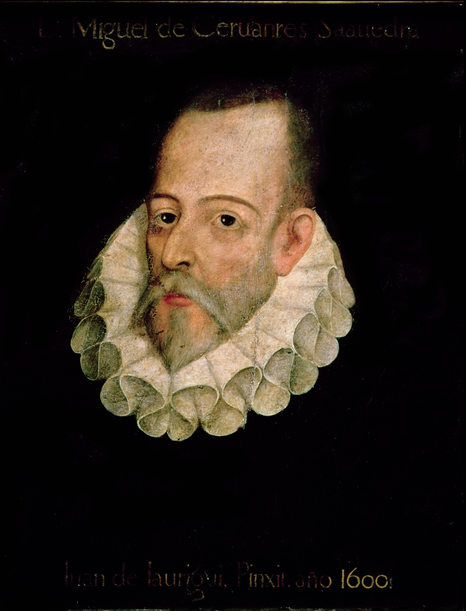
Velázquez perteneció a la escuela nacional española de pintura del siglo XVII. Muy pronto se trasladó a Madrid, se hizo pintor cortesano del rey Felipe IV. Y murió a los sesenta años, tras resfriarse y enfermar de fiebre.5 Su biografía es una biografía de hechos, pero no es la biografía de su vida creadora.
Hay un cuadro asombroso que pintó Velázquez. Se llama «Las Meninas» (que se traduce como «las damas de honor») y fue pintado cuatro años antes de la muerte de Velázquez. Conviene subrayarlo, porque en el cuadro hay ciertos rasgos que podemos interpretar como autobiografía del pintor. Además, por supuesto, es muy interesante qué resonancia tiene este pintor en el día de hoy.
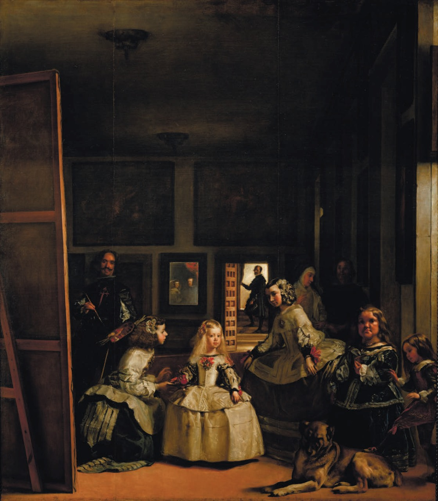
Cuando uno llega ante el cuadro, cuando uno está de pie ante el cuadro, es una gran felicidad, porque ve el cuadro con sus propios ojos. Las reproducciones dan una idea de lo que está representado en ese cuadro, pero no dan idea ni de cómo está pintado, ni de dónde está uno respecto a ese cuadro.
Una vez me tocó hacer, junto con estudiantes, una película sobre el pintor soviético Tyshler. Aleksandr Grigórievich Tyshler estaba aún vivo, y lo invitaron a ver esa película. Tyshler la vio y dijo: «Ah, qué cuadros tan buenos, pero qué lástima que yo nunca los pinté». ¿Cómo que no los pintó? Dijo que el color, aunque es notable, en nada corresponde a la pintura de sus telas en la realidad. Y así, cuando miramos libros, aun los mejores, debemos constatar con pesar que no conocemos esos cuadros.
Pero si hemos tenido la suerte de encontrarnos en el Prado (y ahora es del todo posible), entonces podemos ver una de las mayores maravillas del arte universal: la pintura de Velázquez.
En el caso del cuadro «Las Meninas» es muy importante dónde se encuentra el observador, la persona que mira el cuadro. Cuando uno está de pie ante el cuadro en el Prado, le surge ante todo la completa ilusión de hallarse en el taller que está representado en ese cuadro. Uno está de pie en algún lugar entre la niña —la pequeña infanta Margarita—, las damas de honor que la han traído al taller del pintor, y alguien que está a la espalda de uno. Y es porque el pintor pinta a alguien que está detrás de nuestra espalda. Y la niña ha venido hacia quien está detrás de nuestra espalda. Y todo el cuadro que se despliega ante nuestros ojos está vuelto precisamente hacia aquel a quien pinta el pintor en el caballete que tiene delante. Y uno está invisiblemente presente aquí, dentro del cuadro. No con frecuencia le surge al espectador semejante sensación de presencia real dentro del cuadro, sensación de cruzar la frontera del tiempo: hasta el escalofrío, hasta el frío en la espalda. Porque el modo en que pinta Velázquez, la magia de su pincel, la magia del modo en que transmite el mundo, la atmósfera en que uno se encuentra, hace físicamente perceptible el hecho de nuestra presencia. Dan ganas de volverse.
Es interesante que el propio título del cuadro, «Las Meninas», literalmente no dice nada. Por lo demás, las damas de honor están realmente presentes en este cuadro como damas cortesanas que acompañan a la pequeña princesa Margarita.
Así pues, uno está presente en una acción extraordinaria: cruza la frontera del tiempo y se encuentra en el taller del pintor Velázquez, en el Alcázar de Madrid, no lejos de las habitaciones del rey. Tras el caballete, con el pincel en las manos, está de pie el pintor. Las puertas al corredor las ha abierto el mayordomo mayor de la corte6 y ha dejado entrar a todo un séquito. En ese séquito hay una niña pequeña —la propia infanta Margarita—, sus damas de honor y, a su derecha, una enana. Han llegado al pintor para visitar al papá y a la mamá de la infanta —el rey y la reina—, a quienes pinta Velázquez. Con toda probabilidad pinta un retrato muy grande, porque ante él hay un lienzo muy grande. Y mira con la mayor atención, por encima de nuestras cabezas, a quienes están detrás de nosotros.

La pintura española de fines del siglo XVI y comienzos del XVII es extraordinariamente proclive al relato, a la narración. Los españoles cuentan siempre historias. En general, la naturaleza de esta pasión por la narratividad, por la descripción, es muy fuerte en la escuela española del siglo XVII. Quizá sea importante aquí el desarrollo de la dramaturgia, la aparición de la literatura española. Quizá sea importante el propio carácter de las relaciones y de la vida, pero semejante narratividad es extraordinariamente característica de la pintura española. Por eso el pintor Velázquez siempre nos cuenta con mucho interés lo que pinta y a las personas que representa.
La niña pequeña con su séquito, con sus damas de honor, con su enana, con el perro, ha venido al pintor también a mirar a quienes él pinta. Y quizá el pintor nos pinta a nosotros, porque estamos de pie ante el cuadro: precisamente entre la infanta Margarita, su séquito, el pintor Velázquez, entre ellos y quienes están a nuestra espalda y a quienes justo ahora representa el pintor. Pero la sensación de presencia dentro del cuadro es completa.
En el taller del pintor hay una atmósfera particular a causa de la luz líquida que penetra en ese espacio. Es una mancha viva extraordinaria de luz y de color, y en absoluto la pintura de la que hablaremos más adelante. Así pues, estamos de pie entre la niña, su séquito, el pintor Velázquez y aquellos a quienes él pinta. ¿Y a quién pinta Velázquez? Eso es muy interesante. No podemos volvernos y mirar a quienes él pinta, pero adivinamos quiénes son. Pinta, con toda probabilidad, a quienes se reflejan en el espejo de la pared del fondo del taller: el rey y la reina. Por supuesto, pinta al rey y a la reina en ese gran lienzo, porque son ellos los que se reflejan en ese espejo. He ahí la cuestión: ¿los pintó realmente? Ahora hablamos a propósito no de pintura, sino de lo que está representado en el cuadro y de la composición de ese cuadro.
Es muy interesante que el pintor Velázquez pinta a quienes nunca pintó. Incluso los inventariadores más estrictos de su obra saben que Velázquez no hizo ningún retrato doble del rey y la reina. Y Velázquez nunca pintó a Felipe IV junto a su segunda esposa. Pero tenemos la impresión de que pinta precisamente a ellos y que ellos se reflejan en el espejo.
Mientras tanto, Velázquez no puede pintar a la niña, a su séquito, al mayordomo que ha abierto las puertas para dejarlos pasar, al perro, a la enana. En rigor, ¿dónde está el punto desde el cual pinta? Él está de pie junto a ellos. Por eso no puede pintarlos. Vemos que pinta al rey y a la reina. Lo vemos a él, y vemos a este grupo de personas, pero él no las ve para pintarlas. En este cuadro existe de un modo asombroso la perspectiva directa, es decir, aquella desde la cual vemos este grupo, y la especular, es decir, la que va del espejo hacia nosotros: la del otro lado del espejo, porque es el más allá del espejo. Y en el espejo ocurre algo completamente asombroso: en el espejo se reflejan aquellos a quienes él nunca pintó.
En esto conviene detenerse de modo especial. Velázquez tiene muchísimos cuadros con espejos, y estos espejos desempeñan en su pintura un papel importante. Puede decirse precisamente así: «desempeñan un papel», porque su pintura es pariente de la dramaturgia. Es un juego muy interesante: dramático y también de caracteres. En general, la dramaturgia surge cuando hay comunicación, cuando hay cierta tensión de relaciones, cuando algo ocurre. En sus cuadros siempre ocurre algo muy importante, que nos obliga a tensarnos y a pensar cómo interactúan todas estas personas, cómo se relacionan entre sí.
Es muy interesante que el teatro, en el arte europeo y en la pintura europea en general, desempeñe un papel rector. El arte moderno, como se sabe, cuenta su genealogía a partir del pintor italiano Giotto, y fue continuación del teatro. Ya Giotto representaba un teatro con sus héroes, pero esto no significa que Velázquez aprendiera eso de Giotto. Simplemente, la tradición del arte europeo se formó en gran medida como tradición teatral, como tradición de la acción teatral, con bambalinas y actores. Gracias a estos actores sabemos la historia más de lo que la sabemos por los libros de historia. Los actores nos cuentan de la cultura mucho más de lo que sabemos por los raros objetos que han quedado, o, como ahora se dice, por los artefactos.
Pero Velázquez hace algo simplemente increíble. Nos deja un enorme cuadro del mundo. Describió su taller, describió con todo detalle a las personas entre las que vivía, describió las relaciones internas entre ellas.

La enana que está de pie a la derecha de la niña es un personaje muy interesante. Se llama María Bárbola; era la educadora de la niña pequeña.7 A esta educadora la regalaron los parientes, los Habsburgo. Regalaron a esta alemana, María Bárbola, cuando nació la niña. La enana la seguía a todas partes, y por su notable servicio recibió una alta orden, y esa orden nos la muestra en el cuadro. La enana tiene también su pequeño séquito: junto a ella hay un niño enano y un perro muy hermoso, que yace a sus pies. Si se mira con atención el cuadro, e incluso cualquier reproducción del cuadro, podemos ver que de la ventana del lado derecho entra un haz de luz. Es él el que ilumina este grupo: María Bárbola con el perro y con el pequeño enano. Es uno de los centros del cuadro, en nada menor que la infanta Margarita con sus dos damas de honor. Y en algún lugar, allí en la oscuridad, se hunden las figuras que acompañan a la infanta Margarita.
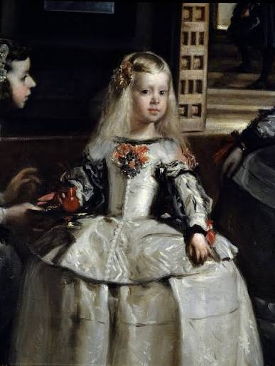
Pero, por supuesto, cuando nos acercamos al cuadro, lo primero que vemos es a la preciosa niña pequeña con un hermoso vestido, con cabellos finos y ralos, con una frente grande de raquítica, con ojos transparentes, con una sonrisa en los labios. Es la niña que Velázquez quiso mucho. Ella le posaba a menudo, él la pintaba a menudo. Es una de sus heroínas predilectas. Él, en general, como todo pintor muy grande, ama a sus héroes. Los pinta con extraordinario amor, con ternura; son sus interlocutores, son personas con las que él también se encuentra en un contacto muy profundo, muy íntimo. ¿Qué contacto puede haber más íntimo que el contacto del pintor y su modelo?
Pero ellos también se encuentran con nosotros en ese mismo contacto. Nos mira el pintor, nos mira la niña. Es a nosotros a quienes la enana muestra la orden con la que ha sido condecorada. Pasan los siglos, un flujo infinito de personas corre ante este cuadro, un flujo infinito de personas se vuelve cada día parte del interior del cuadro y es testigo de esta acción asombrosa que dura eternamente.
Picasso se interesó mucho por este cuadro. Hizo una enorme cantidad de copias de autor. Naturalmente, no son copias directas: en él hay también un espejo roto, y él gira esta composición de un modo y de otro. Todo el tiempo probaba esta composición al gusto, todo el tiempo la probaba en el espacio, porque es una composición muy enigmática: directa y especular a la vez.
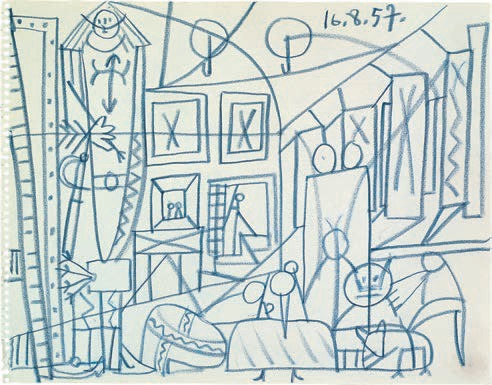
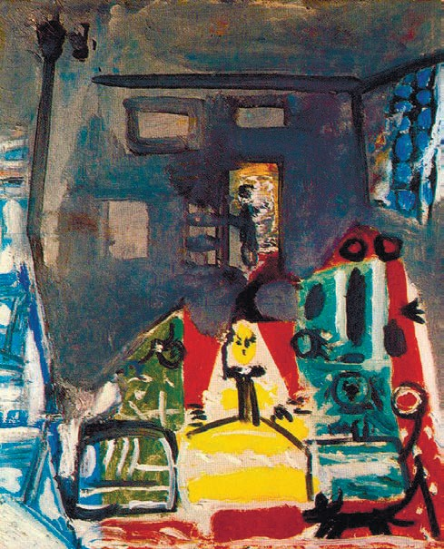
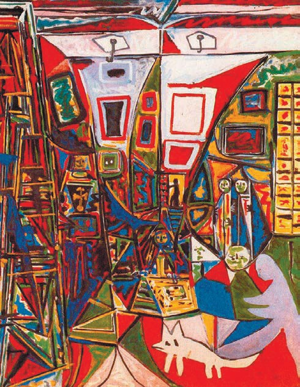
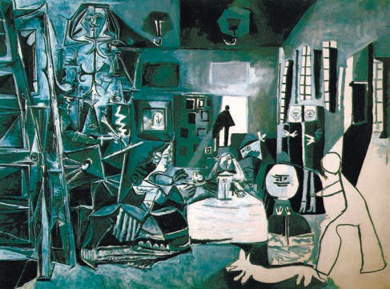
Nuestro ciclo se llama «Puente sobre el abismo». Sí, entre fines del siglo XVI y comienzos del XVII y nosotros se extiende un abismo, pero sobre ese abismo hay un puente. Y nosotros, de pie ante este cuadro, cumplimos la función de ese puente. Nosotros mismos somos ese puente dentro del cuadro. Ese mismo Cervantes se dirige siempre a nosotros con las palabras «amable lector», nos invita al interior de esa vida, al interior de ese mundo. Siempre podemos estar presentes en él, y la presencia dentro de ese mundo no es en absoluto menos interesante que la presencia dentro del mundo en el que vivimos.
Este cuadro de Velázquez puede considerarse desde muchísimos puntos de vista, dársele muchas interpretaciones distintas de esta composición.
Es muy interesante su genial cuadro, el único desnudo de toda la pintura española: «Venus del espejo», que resuena de un modo tan extraño con la línea italiana de las mujeres desnudas. En Tiziano es simplemente otro escorzo de su hija Lavinia.8 Ella está sentada de perfil, y por el otro lado se refleja en ese espejo. Y la bailarina sin par, a la que Velázquez pintó de espaldas, en la que vive, arde y danza toda España hasta hoy. Si es que existen tales bailarinas, con esa curva de cadera y con esa línea cantarina del cuerpo. En el espejo nos mira una mujer completamente distinta de la que suponemos ver. Desde el espejo nos mira el rostro de Dulcinea de Toboso, el rostro curtido, sencillo y vulgar de una criada.
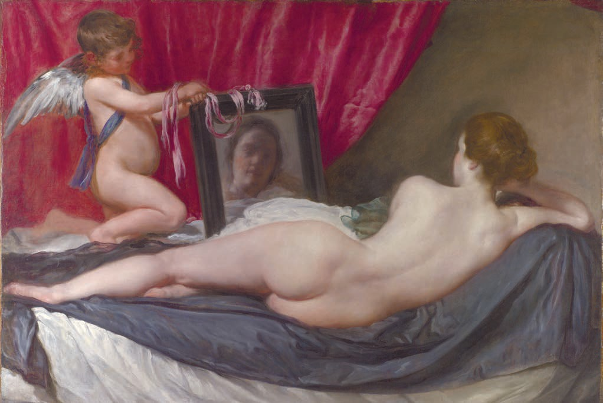
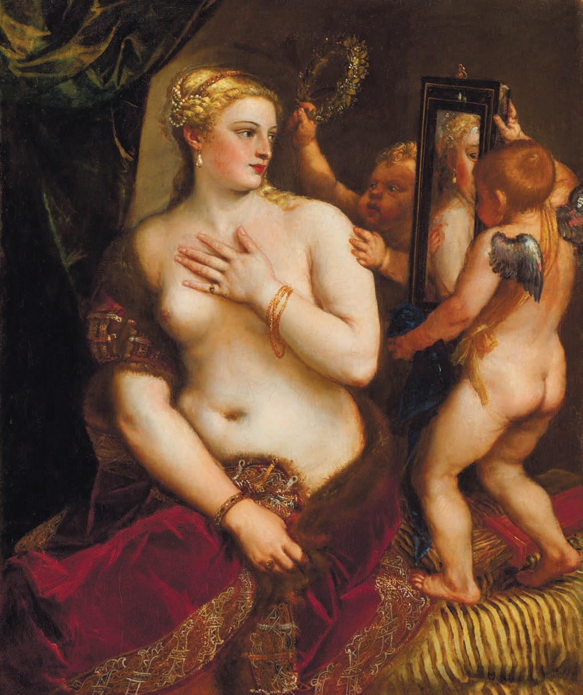
En esta dualidad hay algún sentido muy complejo: es el cuerpo sin par, divino, de la diosa, y el rostro de Dulcinea. Y es ella una sola.
Y he aquí este taller en el que estamos presentes durante la visita de la tierna niña, con su séquito, con su educadora, a una sesión con el pintor. El pintor pinta a su padre y a su madre, que no existen, que existen solo como sombras del más allá del espejo. Con toda probabilidad, este cuadro puede considerarse como autobiografía del pintor, como autorretrato del pintor en el interior, en medio de aquellos entre quienes vivía. Es una valoración completamente distinta de esas personas que despliega ante nosotros, testigos oculares que nos hallamos dentro del cuadro «Las Meninas». Es el autorretrato del pintor Velázquez. Y lo que pinta es completamente incomprensible; pero, por supuesto, no son el rey y la reina, cuyo retrato nunca pintó. ¿Quizá pinta a este grupo, porque el lienzo es muy grande? Es su único autorretrato.9
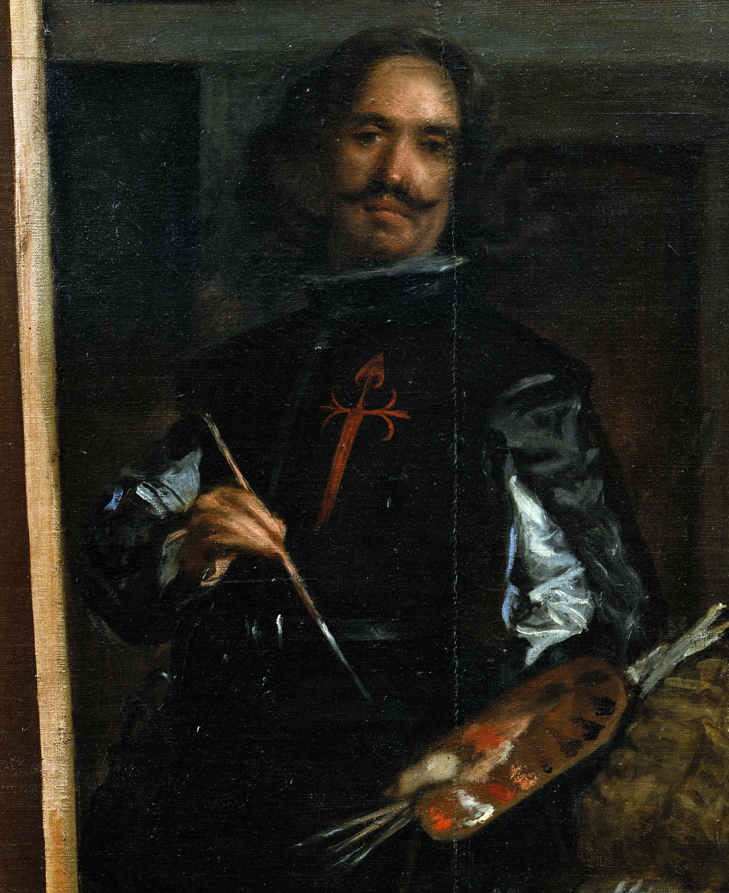
Hay que decir que el autorretrato es un género notable de la pintura. El autorretrato nunca es una autoimagen, salvo, quizás, en el caso de algún hombre completamente enamorado de sí mismo, lo que en absoluto corresponde al concepto de artista. No, el autorretrato es siempre lo que el artista piensa acerca de quién es él. Por ejemplo, el hombre que estuvo muy vinculado con Velázquez y que en mucho lo ayudó en la pintura, el pintor belga Peter Paul Rubens10. Desempeñó un gran papel en la vida pictórica de Velázquez, porque estuvo con alguna misión secreta en Madrid y ya era entonces muy célebre. Y le sugirió a Velázquez algunas cosas en materia de técnica pictórica. Rubens nunca se representó con el pincel en las manos; siempre se representó solo como un fastuoso magnate. Lo vemos como un joven magnate, lo vemos ya muy encanecido, cansado, con la mirada apagada, pero siempre vemos al magnate. Y Velázquez se pintó tal como se veía a sí mismo, y él se veía a sí mismo solo como pintor. Nació pintor para pintar estos cuadros, para dejárnoslos, para nuestra memoria. Aunque es difícil decir si ejercen alguna influencia sobre nosotros esas grandes obras maestras que nos dejan los poetas —pintores y dramaturgos—. ¿Influyen en nosotros? Quizá, si influyeran en nosotros, seríamos algo distintos. Seguramente el porcentaje de personas sobre las que ejercen su benéfica influencia es muy bajo. Pero no se trata de eso.
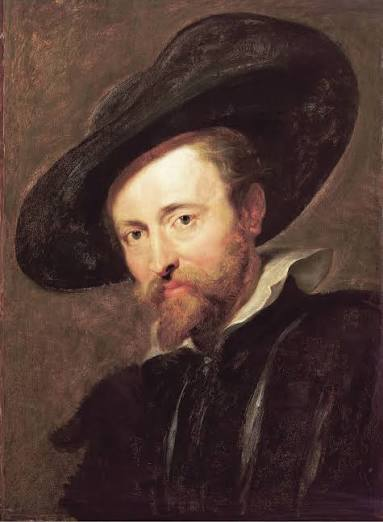
Recordemos lo que representa la serie continua de autorretratos de Durero, como una anotación de diario: desde el momento en que se representó como un niño y escribió: «Este soy yo, me dibujé a mí mismo en el espejo en 1484, cuando era todavía un niño. Alberto Durero», hasta el momento en que se dibujó moribundo, en que mostró que moría de una enfermedad del páncreas11.
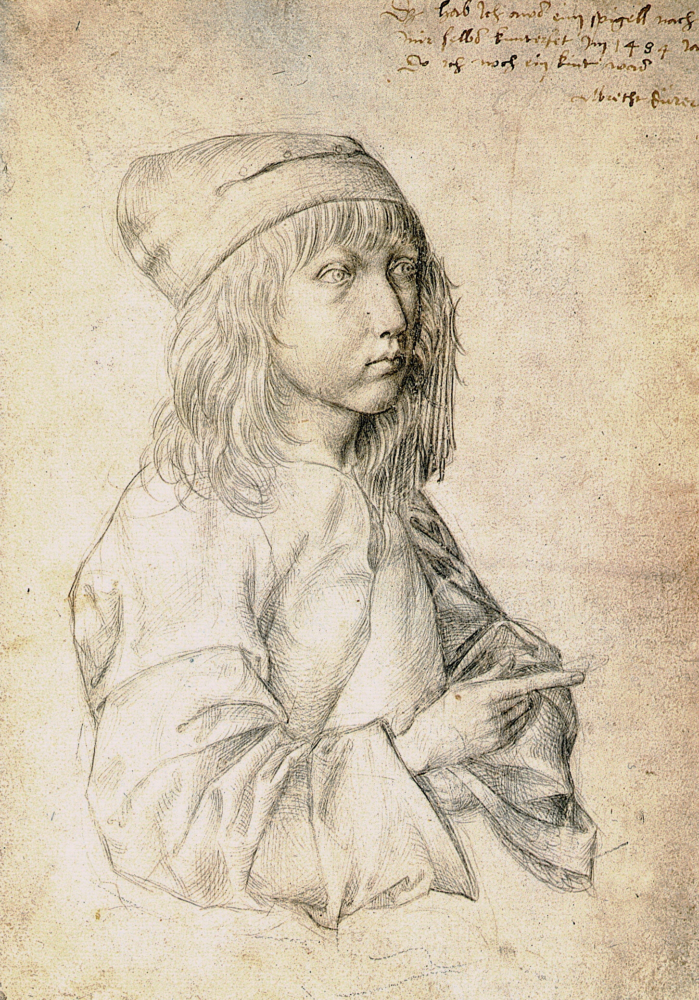
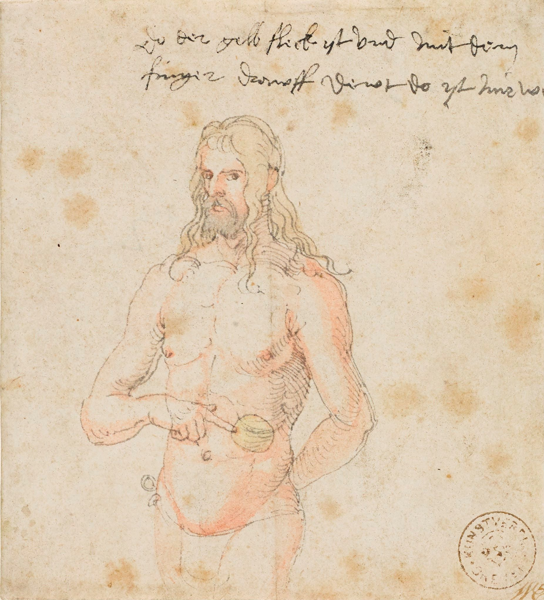
El autorretrato del artista nunca es una autoimagen, es una conversación consigo mismo acerca de sí mismo, es la reflexión del artista sobre quién es él. Y he aquí que vemos en el cuadro llamado «Las Meninas» un gran autorretrato del pintor Diego Velázquez. Y su relato se dirige a nosotros, que estamos de pie ante él, como si fuéramos sus modelos. Él comprendía bien este efecto. ¿Quién es él? Es pintor. Es solo pintor. Es solo pincel, es un hombre de pie ante el caballete. Vive en esa jaula de su taller.
Es muy interesante que Felipe IV se comportaba respecto a Velázquez aproximadamente igual que Nicolás I respecto a Pushkin. No quería dejarlo salir al extranjero. Por qué temían dejarlos salir al extranjero, hasta hoy no está claro. Y Felipe IV de ningún modo quería dejar salir a Velázquez al extranjero. Siempre dejaba en rehenes a su familia. Dos veces estuvo Velázquez en Italia, donde le apetecía muchísimo estar. Felipe IV quería cuadros italianos, y comprendía que solo Velázquez podía comprar esos cuadros italianos que hacían falta, y los compró. Pero cuando Velázquez pintó el retrato del papa Inocencio X (que, por cierto, fue propiedad de nuestro Ermitage)12, entonces ya lo llamó de vuelta prematuramente y nunca lo dejó marchar de su lado. Velázquez estaba como encadenado a su pie con una cadena corta. Por cierto, también tenía un cargo aproximadamente como el de Pushkin. Es muy curiosa la analogía: Pushkin tenía el cargo de gentilhombre de cámara (kammerjunker), y Velázquez tenía un cargo como de ayuda de cámara. Y recibía menos dinero que su peluquero personal. Dinero, en general, no debía tener; no podía tomar dinero en las manos, porque era hidalgo. Los regalos eran otra cosa.
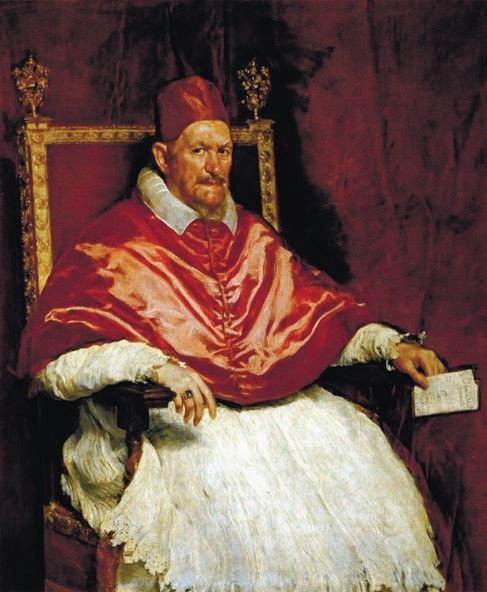
Así pues, Velázquez era pintor. Y dijo: yo soy pintor, soy solo pintor, y esto es el mundo en el que vivo y que pinto, porque soy pintor cortesano. He aquí que con gusto pinto a esta niña, a esta preciosa niña pequeña. ¡Ah, qué bien pintaba a los niños, cómo amaba a los niños, cómo le gustaba pintar niños! Y he aquí que esta niña pequeña es la central de este cuadro. Es la heroína central de su obra. Siempre pintaba enanos, lo sabemos; tiene una célebre galería de retratos de enanos. He aquí que pinta a María Bárbola con su séquito. Pintaba a los cortesanos y a las damas de honor semejantes a flores. ¡Qué admirablemente vestidas están, con esos vestidos de faldas grandes que se llamaban «verdugado»! ¡Cómo pinta este color coral, y cómo pinta en general la tela!
Una de las damas de honor se ha arrodillado ante la infanta y le da una tacita con agua (la tacita está hecha de una arcilla roja aromática especial), porque la niña no podía tomar agua por sí misma: tenía que dársela una dama de honor. ¡La infanta ni siquiera podía tomar la taza, echar agua y beber! Y he aquí que la dama de honor le da esa agua, según el ritual, arrodillándose. Y quienes eran los verdaderos amos reales del destino de Velázquez, el mayordomo mayor de la corte o el rey y la reina, quedaron en su cuadro no más que como sombras del más allá del espejo.
Felipe, rey de España, perteneciente a la dinastía de los Habsburgo. Imagínense ustedes que era el soberano de medio mundo. Era el soberano de España, de las colonias españolas en Europa y, lo más importante, era el señor de las colonias españolas en América del Sur. Es decir, un hombre que sentía la ilimitación de su poder. A partir del siglo XVI se formó en España un sistema muy rígido de relaciones y, al mismo tiempo, un ritual muy rígidamente compuesto, que todos debían observar. Una corte tan ritual como la española no la conoció nunca Europa; ninguna corte europea conoció semejante ritual. La corte rusa conocía el despotismo arbitrario, pero ritual en Rusia no había. Rusia no soporta el ritual y no puede observarlo: se harta de él al mes. Y en España, en cambio, todo era ritual. Ritual el movimiento, ritual la ropa, ritual el sistema de relaciones.
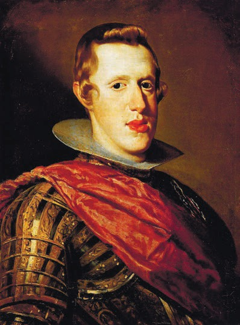
En ningún lugar de Europa había un ritual como el de España, ni siquiera en la corte de Luis XIV, que era muy ritual. Los españoles inventaron el corsé. Llevaban corsés hombres y mujeres, se los apretaban fuertemente. Y fueron los primeros en introducir las medias. Antes de la moda española se llevaban pantalones tipo calzas, como los italianos. Y los españoles introdujeron el corsé; al corsé se sujetaban las medias con unos enganches; introdujeron pantalones que se ponían por separado, chaquetas cortas, capas muy cortas. La capa italiana es larga, y la española es corta, hasta el codo. La chaqueta estaba obligatoriamente abrochada por completo hasta la barbilla, y en hombres y en mujeres. Y aún un cuello blanco plisado. Resultaba que no podían doblar la espalda. Solo podían estar así de pie. Y esto no es todo: hombres y mujeres llevaban en la cabeza gorritas muy pequeñas con una pluma. Y debían equilibrar la cabeza para que esa gorrita no se les cayera. De este modo estaban completamente encajados en su traje. Y en el siglo XVII se añadió a esto un detalle más: el verdugado. Es una pantalla sobre la que se ponía el vestido, y con él no podían ni sentarse ni pasar, ni los niños ni los adultos.
Es decir, fue el primer traje social ritual de la historia europea, que subrayaba la altivez, el distanciamiento, la soberbia y la soledad. Eran muy poco libres. Y además esas corazas rígidas que llevaban puestas, con gorritas, con faldas verdugado, con esos cuellos altos, cuando ni siquiera podían saludar: solo hacían un signo con las pestañas. No tenían derecho a tomar dinero en las manos. Cuando Velázquez pintó a Inocencio X, este no podía darle dinero por su retrato, porque era indecoroso: los hidalgos no toman dinero en las manos, se lo llevan en su bolsa detrás de ellos.
Otra cosa es el sur de España, donde eran muy fuertes las influencias árabes. Y he aquí que en el sur de España se formó otra tradición, que está admirablemente mostrada en la dramaturgia española meridional de capa y espada. En ellos el repiqueteo de los tacones y el abanico en las manos eran lo mismo que el alfabeto Morse. Y en los hombres era el movimiento de la capa, la espada y el sombrero. Era un lenguaje de libertad, un lenguaje interior. Podían decir cualquier cosa, pero en ese momento con los tacones, el abanico, la capa, dar una señal sobre algo completamente distinto. Se formaba un doble lenguaje, un lenguaje esópico; era también un lenguaje escénico, lenguaje de movimientos y de gestos.
Así pues, Felipe era un rey ritual español. El poder, durante su reinado, pertenecía a un valido. Al valido lo llamaban Olivares.
Olivares era favorito; es cosa corriente con los monarcas absolutos. En Francia eran las favoritas, y en España, con Felipe IV, era Olivares. Pero este hombre no se manifestó en nada significativo como hombre de Estado.13
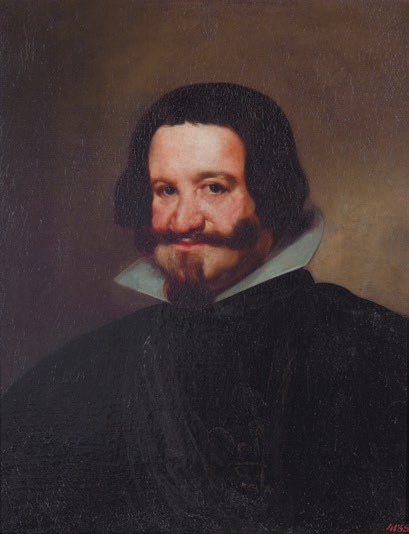
No puede decirse que la Inquisición fuera especialmente feroz con Felipe IV. ¿Qué Inquisición, si aun así se publicaba a Cervantes, si se publicaba a los dramaturgos españoles, al poeta Góngora? Y los reyes españoles amaban mucho el teatro. Es decir, había lo uno y lo otro. Por un lado, era un régimen real, imperial, totalitario, muy cruel, muy reglamentado, y, por supuesto, el poder de la Inquisición existía. Y por otro lado, eran, con todo, tiempos más vegetarianos. Puede decirse que la Inquisición a fines del siglo XVIII y comienzos del XIX se comportaba mucho más ferozmente de lo que se comportó a fines del siglo XVI y comienzos del XVII en España. Aunque no debe olvidarse que en 1600 fue quemado en la hoguera Giordano Bruno.
Felipe encabezaba este imperio y era, con toda probabilidad, un hombre débil. En cuanto a sus cualidades personales, no era ni cruel ni malvado, no estaba tan loco como Felipe II. Pensaba que él mismo era pintor, aprendía pintura de Velázquez y, al mismo tiempo, lo humillaba sin cesar. No por casualidad comparamos a Nicolás I y Pushkin con Felipe IV y Velázquez. Ambos comprendían muy bien con quién tenían que habérselas, ambos comprendían el genio de esas personas y los admiraban a su manera infinitamente. Y, a su manera, al mismo tiempo, los humillaban infinitamente.
Felipe IV era célebre por sus aventuras donjuanescas; de Velázquez, en cambio, nada se sabe; es como un hombre que no tuvo ni mujeres ni biografía. Tiene un retrato asombroso de su hija. Era un hombre disuelto en su familia, y Felipe obligaba a este hombre a llevar la linterna14 e ir con él cuando salía de noche a sus citas. Una historia bastante poco lucida.
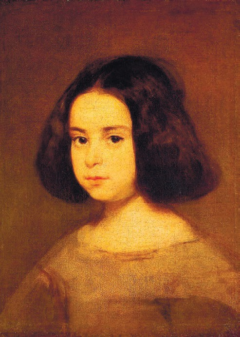
Velázquez quería obtener la confirmación de que era hidalgo español. Y para eso debía presentar el comprobante del impuesto de la sal por parte del padre y por parte de la madre, casi de ocho generaciones, porque los hidalgos estaban exentos del impuesto de la sal. La sal se extraía en condiciones muy duras, era deficitaria y muy cara. Y una determinada categoría de la nobleza estaba exenta del impuesto sobre la sal. Les daban comprobantes especiales. Y Velázquez viajaba a reunir estos comprobantes para presentarlos, porque comprendía que era mortal y quería que su familia tuviera una posición determinada y recibiera por él una pensión. Esto confirma una vez más que era un hombre muy dependiente en lo cotidiano.
Era un mago. Era un gran maestro. Y cuando tomaba el pincel en las manos, la verdad volvía a su sitio, y entonces desaparecía la dependencia directa del rey y de la reina, de los mayordomos, de todos, y llegaba la hora de la verdad. Entonces pasaban al primer plano aquellos a quienes amaba, y quienes eran sus opresores quedaban solo como sombras en el más allá del espejo o como manchas embadurnadas en la luz del sol. El tema principal de la España de los siglos XVI y XVII, el tema principal de Cervantes y de los pintores del realismo español, del «bodegones» español (como Zurbarán y Ribera), es la libertad. Para España en los siglos XVI y XVII el tema de la libertad interior era muy importante. ¿Para qué hablar a los italianos de la libertad, si la tienen de todos modos? No conocen ese tema. Pese a la Inquisición, allí existía la herencia del humanismo, existía la pintura veneciana, de la que Velázquez estaba enamorado, con la que deliraba, de la que aprendía. Decían que pintaba con manchas, como los venecianos. Era una manera impresionista, que muchos años anticipó el impresionismo en el sentido de la comprensión de la pintura.
La libertad de Velázquez era integral, auténtica y plena, porque pintaba con la misma libertad. Fue el único pintor que en cada uno de sus cuadros mezclaba todas las técnicas que conocía. Podía pintar con claroscuro, en relieve, como un caravaggista, y de inmediato pintar con esas manchas venecianas, al estilo del impresionismo. Tiene un cuadro notable: «Cristo en casa de Marta y María». Está de pie la cocinera, una muchacha fea de manos pesadas, y junto a ella una mujer que le cuenta la historia de Cristo, de Marta y de María, para animarla, para mostrarle que es muy necesaria en esta vida. El cuadro está pintado en la manera caravaggista española meridional, en la manera sevillana. He aquí esos huevos, esas sartenes: todo está admirablemente pintado.
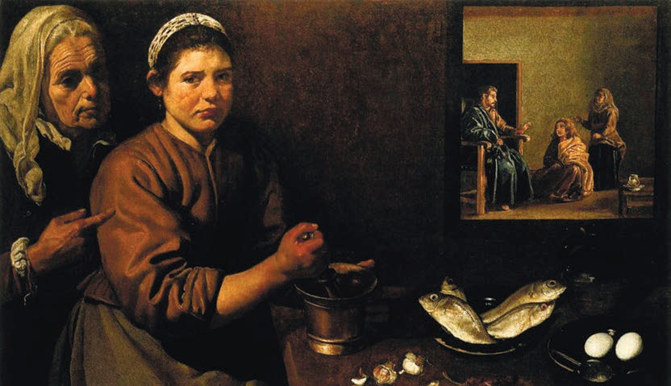
Y en el espejo que cuelga en la pared vemos la historia de Cristo, de Marta y de María. Existe una parábola así. Cuando Cristo llegó a su casa, María hablaba con él de temas elevados, y Marta todo el tiempo cocinaba, se afanaba por la casa. Y Cristo explicó que en esta vida, en este mundo, son necesarias Marta y María, que son equivalentes ante él: Marta y María. Y la que es para la casa, para lo cotidiano, para la vida, y la que es para el intelecto, para el corazón.
La cocinera mayor cuenta a la joven sirvienta una historia, y esa historia está mostrada como en la pantalla del cinematógrafo. El más allá del espejo, cinematográfico. Y he aquí que ese cuadro en el espejo está pintado de un modo completamente distinto. Si se recorta aparte y se amplía, verán ante ustedes un cuadro pintado por un pintor impresionista. Una libertad completamente fantástica: tanto en el modo en que construyó el argumento, como en el modo en que construyó el espacio, como en el modo en que empleó la técnica pictórica. Es una libertad que se permite un maestro genial, que no puede pintar de otro modo, porque es un genio.
Y en el cuadro «Las Meninas» Velázquez creó su autobiografía no escrita. Nos contó todo sobre sí mismo. Que es un mago y que al movimiento de su varita mágica, es decir, de su pincel, el mundo entero gira de otro modo: gira en el cristal mágico de su creación y se vuelve completamente otro. Y entonces ocupan un lugar completamente distinto el propio Felipe IV y su esposa. Así lo pensaba él, y de eso nos hizo partícipes. ¿Tiene derecho semejante interpretación a existir? Sin duda, no es la única interpretación. Para eso Velázquez es Velázquez: para que podamos proponer crear todavía otra pieza, todavía otra dramaturgia, además de la pieza o la dramaturgia sobre tema autobiográfico. Pero él nos la cuenta a nosotros. Recordemos que estamos dentro de la habitación, entre él y el rey con la reina.
¿Y cómo pintó realmente Velázquez este cuadro? Del rey y de la reina nos queda claro: nunca los pintó, están representados como sombras del más allá del espejo, y exactamente igual está pintada la historia de Cristo, de Marta y de María. Probablemente había empotrado en la pared un espejo muy grande. Y quizá simplemente los pintaba, de pie ante ellos con el caballete, y luego se incluyó, por así decirlo, en ese cuadro. No sabemos cómo lo pintó, aunque hay varias respuestas a esta pregunta. Pero lo mejor será que cada uno tome una buena reproducción, la examine con atención y se cuente a sí mismo este cuadro. En él Velázquez se dirige a nosotros.
Hay una respuesta sencilla a la pregunta de qué es la actualidad. ¿Qué es eso: modernismo? ¿Corrientes novísimas? ¿Ritmos novísimos? ¿O son preguntas que debemos responder, pero que aún no hemos respondido? Nunca responderemos a la pregunta sobre la naturaleza de la genialidad. Es más: el propio genio, quizás sabe, y quizás no sabe, que es genial. Como escribió nuestro escritor Vasili Vasílievich Rozanov en carta al padre Pável Florenski: «el genio es sin voluntad». ¿Qué significa esto? Está condenado a sí mismo. Está obligado a seguir su propia naturaleza, es esclavo de su genio. Suena un poco dramático, pero en realidad es admirable: seguir a tu genio, realizarte hasta el final. Y siempre son precisamente estas personas quienes nos muestran qué cumbres existen en el ámbito de las posibilidades, de las realizaciones humanas.
Todos piensan, por alguna razón, que Velázquez leía a Cervantes. Difícilmente la educación del pintor Velázquez pasara leyendo «Don Quijote». Pero lo que sí leía, lo sabemos con certeza; sobre qué literatura se educó, lo sabemos con certeza, porque esto se conoce por lo que escribe Cervantes en su prólogo al «Don Quijote».15 En él enumera a los autores antiguos. Pero sabemos aún más por los cuadros mismos de Velázquez: pintó a Menipo y a Esopo, es decir, leyó la sátira menipea. Por eso sabemos qué libros leía. Fue una educación espléndida, amplia y libre.
El tema de Menipo y de Esopo tiene para Velázquez un significado completamente especial. Es la representación de dos filósofos. Son mendigos. Están representados sobre dos tablas altas y verticales. Sobre Menipo, la capa del caminante y el sombrero del caminante. Menipo se reía en el infierno. Y Esopo está también vestido con harapos, ceñido con algún trapo, y ante él hay una escudilla y yacen unos libros. Es un tema especial para España. Es el tema de la libertad espiritual, de la libertad absoluta. La libertad es incompatible con el concepto de propiedad. Para ellos el concepto de propiedad significaba ya el sometimiento y la esclavitud, y un hombre verdaderamente libre interiormente debe ser aún un hombre del camino. La mayoría de las veces los filósofos están representados en el camino o en el viaje. El camino: son los hombres libres, que caminan libremente por los caminos. Y el tema del camino es el tema de la búsqueda espiritual interior. Precisamente en España nació este género: la representación de los filósofos mendigos, como por ejemplo en el pintor José de Ribera, que sirvió en la corte del rey napolitano16, el cual tiene relación directa con la formación del lenguaje de la escuela española. Es muy interesante en general el tema de la encrucijada, de la posada en la encrucijada, adonde el caminante puede llegar e irse. Es decir, es el tema del punto de intersección de los destinos en los caminos y en las rutas de libre circulación. O un héroe muy importante para España: el hombre libre, que no está vinculado a nadie ni a nada. Esto es especialmente interesante en el cuadro de José de Ribera «El patizambo». Un muchacho con una pierna lisiada, con un brazo torcido, con un rostro prematuramente envejecido, con dientes podridos. Pide limosna, pero sonríe con picardía, con descaro, con alegría. Y Ribera lo representó sobre una colina, y bajo él se extiende todo un país. Lo representó como si fuera Olivares a caballo ante un paisaje semejante, en la cima. Dicen que es el primer cuadro español que Catalina de Médicis compró para el Louvre.17 En el Louvre cuelga por separado, como una de las primeras adquisiciones. De modo que el tema del filósofo, el tema de la libertad y el tema del camino están entre sí vinculados. Don Quijote es también un héroe libre en el camino, el Caballero de la Triste Figura.
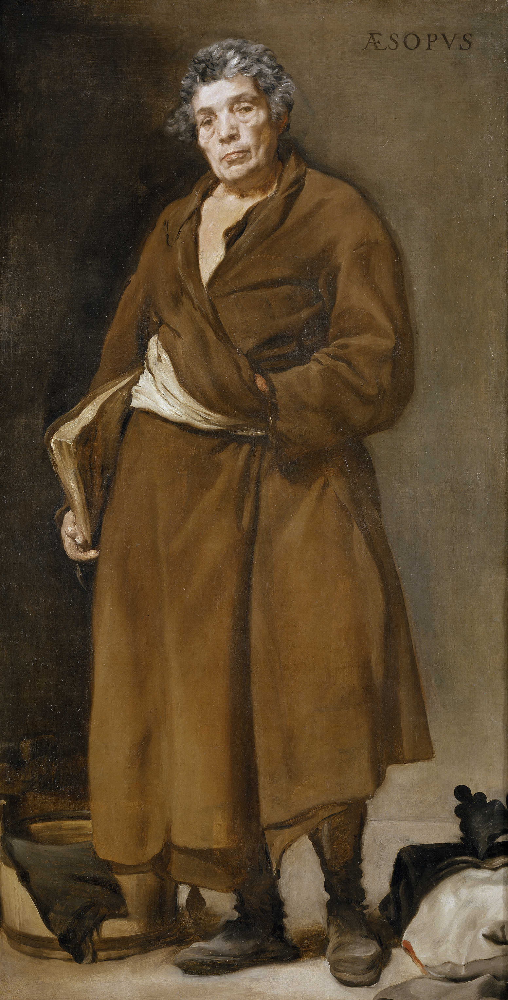
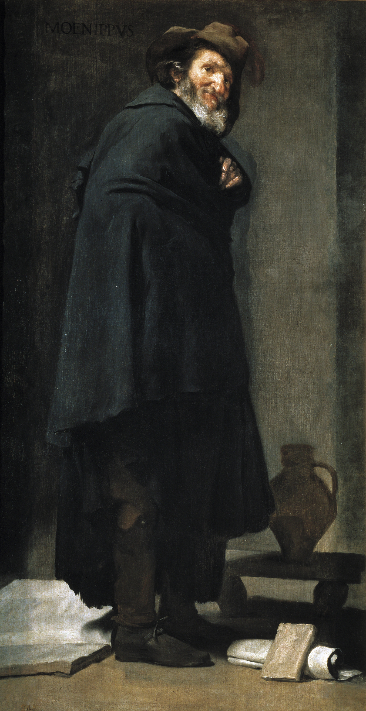
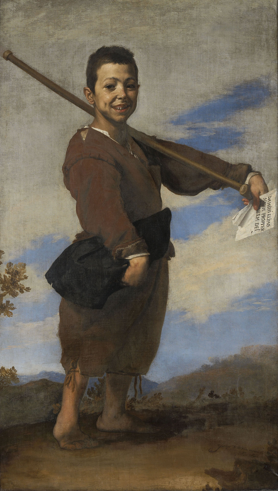
Estas personas eran muy libres y sabían muchísimo; conocían admirablemente la Antigüedad, la literatura contemporánea a ellos, y lo más importante: eran consecuentes y fieles a su genio hasta el final, pese a cualesquiera condiciones. Y encontraban la forma en que podían compartir con nosotros su tiempo y hacernos partícipes de él.
Notas del editor
1. La tabla que puntúa a los grandes pintores no es obra de ninguna «máquina japonesa»: la elaboró el propio Dalí y figura en «50 secretos mágicos para pintar» (1948). En ella la máxima puntuación la obtiene Vermeer, seguido de Velázquez y Rafael.
2. Velázquez nació en Sevilla en 1599 (bautizado el 6 de junio). Solo tenía diecisiete años cuando murieron Cervantes y Shakespeare (1616), así que llamarlo su contemporáneo es forzado.
3. La frase está en el «Diario de un escritor» (1876) de Dostoievski: en el Juicio Final, la humanidad podrá presentar el «Quijote» como resumen de su vida.
4. Velázquez hizo carrera en palacio: fue ujier de cámara, ayuda de guardarropa, ayuda de cámara (1643) y aposentador mayor de palacio (1652), un cargo de mucha responsabilidad. Lo que buscó al final de su vida no fue un «comprobante del impuesto de la sal», sino el hábito de caballero de la Orden de Santiago. Lo obtuvo en 1659, tras unas pruebas de nobleza que exigieron una dispensa papal. La historia de la sal parece una confusión con la condición de «pechero».
5. Murió el 6 de agosto de 1660, con sesenta y un años, de unas fiebres, tras volver de la frontera francesa, donde había preparado el encuentro de la Isla de los Faisanes.
6. La figura de la puerta del fondo es José Nieto Velázquez, aposentador de la reina, según Palomino, no el «mayordomo mayor».
7. Mari Bárbola (Maria Barbara Asquín) era una enana de origen alemán al servicio de la reina, no la «educadora» de la infanta. No consta ninguna condecoración: lo que lleva al pecho es un colgante. El «niño enano» es el italiano Nicolasito Pertusato.
8. No hay pruebas de que Lavinia, la hija de Tiziano, posara para su «Venus ante el espejo». La «Venus del espejo» de Velázquez tampoco es exactamente el «único desnudo» de la pintura española, aunque sí el único femenino conservado del pintor y uno de los poquísimos del Siglo de Oro.
9. No es el único: se conservan otros autorretratos de Velázquez, como el del Museo de Bellas Artes de Valencia y el de la Pinacoteca Capitolina de Roma, que se reproduce en este capítulo.
10. Rubens era flamenco, de Amberes. Estuvo en Madrid en 1628–1629 en misión diplomática y trató allí a Velázquez.
11. Véase la nota del capítulo 13: el dibujo de Bremen no menciona el páncreas ni el cáncer.
12. El retrato de Inocencio X está en la Galería Doria Pamphilj de Roma y nunca salió de allí. Lo que perteneció al Ermitage y se vendió en 1931 a Andrew Mellon (hoy en Washington) es un busto del papa, considerado un estudio o una réplica de taller.
13. Juicio discutible: Olivares, valido de 1622 a 1643, fue el principal estadista de la monarquía, con un vasto programa de reformas (la Unión de Armas) cuyo fracaso culminó en las revueltas de Cataluña y Portugal (1640).
14. No hay fuente conocida para esta anécdota.
15. El prólogo del «Quijote» parodia la erudición al uso; no informa de las lecturas de Velázquez. Estas se conocen por el inventario de su biblioteca, levantado a su muerte (1660): unos 150 volúmenes de arquitectura, matemáticas, geometría, perspectiva y literatura.
16. Ribera trabajó en Nápoles, que entonces era un virreinato español, para los virreyes. No había «rey napolitano».
17. Imposible: Catalina de Médicis murió en 1589, y «El patizambo» es de 1642. El cuadro entró en el Louvre en 1869, con el legado del doctor La Caze.